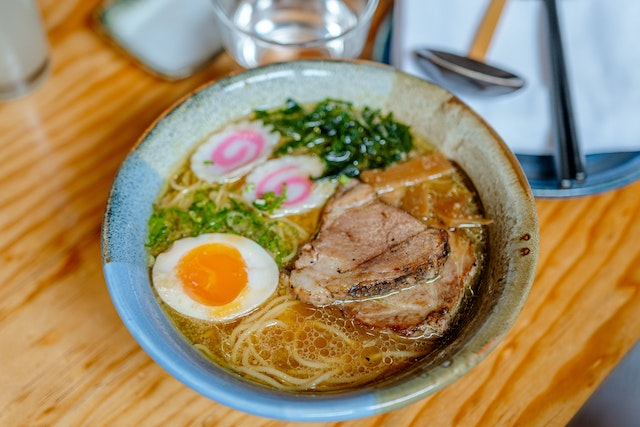

Ichiraku Ramen

Recreate a mouthwatering dish from your favorite anime!
Ever find yourself wishing you were a ninja who could recharge
after a delicious bowl of ramen? With this recipe, learn how to
recharge for another round of binge watching filler episodes from
the comfort of your couch!
Ingredients
Makes approximately 4 servings
- 0.5 c Soy Sauce
- 5 c Chicken Broth
- 16 oz Ramen Noodles
- 4 sheets Nori
- 4 slices Naruto (Japanese fish cakes)
- 2 halved Soft-Boiled Ajitama (marinated eggs)
- Menma (pickled bamboo shoots)
- 8 slices Chashu
- Spring Onions to taste
Directions
- Bring a large pot of water to a boil.
- In a medium saucepan, mix soy sauce and chicken broth.
Bring to a simmer over low heat.
- Boil ramen noodles for 2 minutes.
- About 30 seconds before noodles are done cooking, pour broth into ramen bowls.
- Drain noodles and portion into broth.
- Garnish bowls with chashu, naruto,
ajitama, menma, spring onions,
and nori.
- Enjoy!